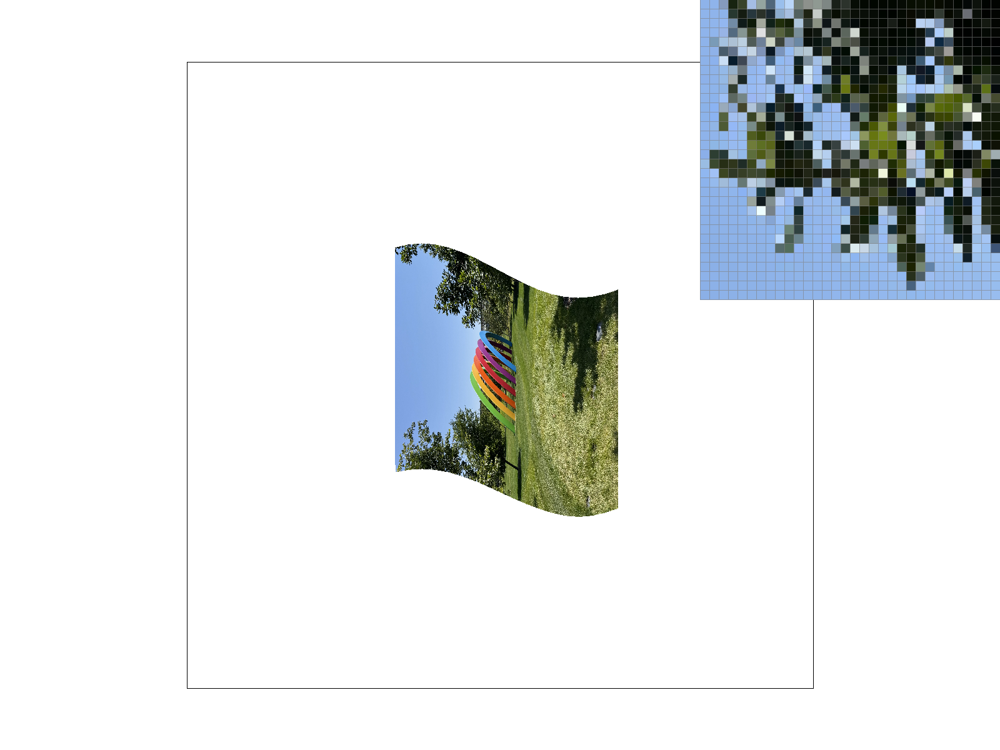
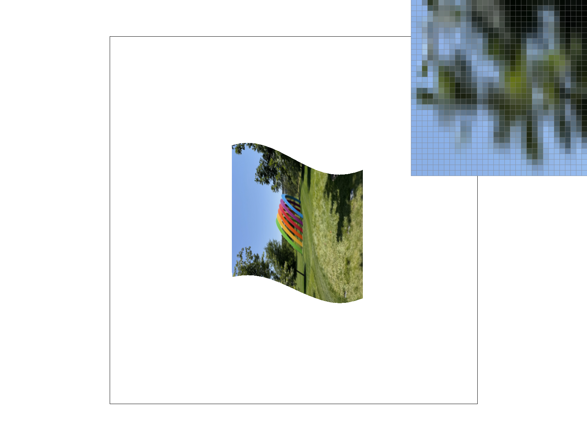

Task 6: “Level sampling” with mipmaps for texture mapping
What is level sampling?
- When we are working with mipmaps, level sampling is how we choose which mipmap level to sample from when texturing a surface. A mipmap contains the same texture but at different resolutions and scales.
When applying a texture to the scene, pixels that are close to the user require a higher level of detail so we choose a mipmap with a lower level. Lower level mipmaps have higher resolution and higher level mipmaps have lower resolution. For pixels further away, we choose a higher level since it requires lower detail due to many texels per pixel.
-
For our implementation, in
RasterizerImp::rasterize_textured_triangle, we find the barycentric u, v vectors for the sample point (x, y), (x + 1, y), and (x, y + 1).
The latter two translate into \((\frac{du}{dx}, \frac{dv}{dx})\) and \((\frac{du}{dy}, \frac{dv}{dy})\) respectively. But we needed to find two difference vectors \((\frac{du}{dx})\) - sp.p_uv * width and \((\frac{du}{dy})\) - sp.p_uv * height. We use these as our representations for \((\frac{du}{dx}, \frac{dv}{dx})\) and \((\frac{du}{dy}, \frac{dv}{dy})\) with respect to our texture dimensions.
Next, we use the equation from the lecture slides \(L = max(\sqrt{(\frac{du}{dx})^2 + \frac{dv}{dx})^2}, \sqrt{(\frac{du}{dy})^2 + (\frac{dv}{dy})^2})\), \(D = log_2{L}\) where \(D\) is the mipmap level.
-
For
L_LINEAR, we get a continuous (as a float) representation of the mipmap level. Then, we get the upper and lower levels bounding it, sample based on the point sampling method, and finally lerp continuous_level - lower_level between the two sampled colors.
Discuss the tradeoffs between speed, memory usage, and antialiasing power between pixel sampling, level sampling, and the number of samples per pixel:
- Pixel Sampling
- Speed: Pretty fast as when in NEAREST we are performing 1 lookup and for LINEAR we are performing 4 lookups.
- Memory Usage: Constant since we are just using the original pixels in the image.
- Antialiasing Power: Limited as aliased lines will still appear to be blocky and may still contain artifacts.
- Level Sampling
- Speed: Slower than pixel sampling, but still faster than number of samples per pixel due to performing calculations for finding the appropriate mipmap level.
- Memory Usage: Higher, as we need to store the mipmap texture.
- Antialiasing Power: Good against texture minification and preventing moiré patterns.
- Number Of Samples Per Pixel
- Speed: Very slow as the cost scales linearly with sample number.
- Memory Usage: Our sample buffer size increases linearly with the sample number.
- Antialiasing Power: Best all of the three, but very expensive.
Image of the Apple Park rainbow shown in different combinations of lsm and psm:
|
L_ZERO, P_NEAREST
|

L_ZERO, P_LINEAR
|
 L_NEAREST, P_NEAREST
L_NEAREST, P_NEAREST
|

L_NEAREST, P_LINEAR
|